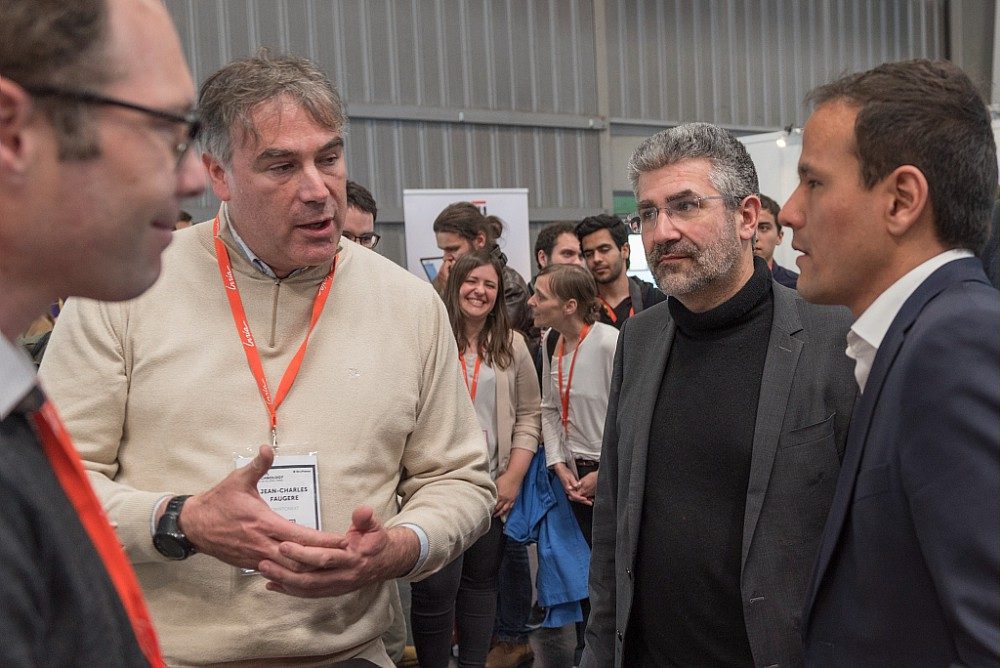
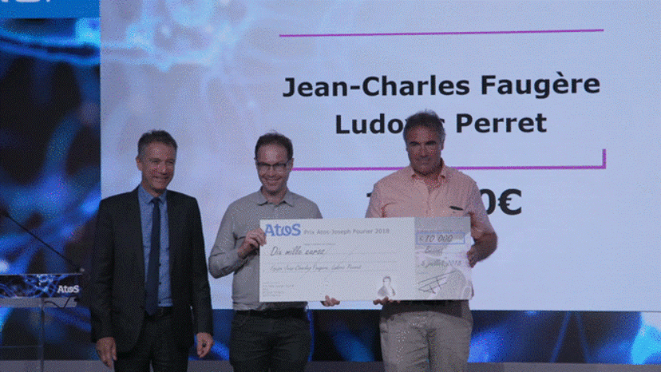

News CryptoNext Security |

|
BPI Inno generation: Realite de la menace quantique sur la securite• Denis Mercier, Ex-Commandant suprême pour la transformation de l’OTAN • Paula Forteza, Députée LREM • Olivier Senot, Docaposte • Christophe Jurczak, Quantonation • Jean-Charles Faugère, Cryptonext Security |

|
The Crown Prince of Denmark Frederik accompanied by Xaviel Niel this morning at STATION FWe were honored to host the Crown Prince of Denmark Frederik accompanied by Xaviel Niel this morning at STATION F. Particularly interested in cybersecurity, CyptoNext Security had the chance to present them its activities. |
|  |
VivatechCedric O, State Secretary for the Digital Economy of France and Bruno Sportisse CEO of INRIA. The CryptoNext Security Quantum-safe library was presented at Vivatech. |
{kind=link}

|
Qui sont les 100 Français qui comptent dans la cybersécurité?L’Usine Nouvelle met en lumière 100 talents qui illustrent la diversité française en matière de cybersécurité. Jean-Charles Faugere a été selectioné dans la catégorie "ILS ANTICIPENT LES MENACES DE DEMAIN". |
{kind=link}

|
CryptoNext at The Future of Quantum Businesses |

|
La Recherche: Maths du secretÀ l'heure du bouleversement promis par l'ordinateur quantique, les cryptographes, dans l'industrie et les institutions, s'interrogent. Comment conserver la confidentialité des données numériques si cette machine rend caduc le chiffrement de tous les systèmes utilisés jusqu'ici ?" (in La Recherche). |
|  |
Prix Atos-Joseph FourierRécompense l'excellence de travaux dans les domaines de la simulation numérique, l'intelligence artificielle et le calcul quantique. "Pour la catégorie calcul quantique, on compte un seul lauréat (10 000 euros) formé du tandem Jean-Charles Faugère, chercheur à l'Inria, et Ludovic Perret, professeur associé à Sorbonne Université. Cette équipe développe depuis 15 ans des algorithmes de chiffrement basés sur l'informatique quantique pour résister aux futurs systèmes de déchiffrement." (in le Monde Informatique). |
{kind=link}

|
Enfin ! La revolution quantiqueLes ordinateurs quantiques pourraient devenir réalité en 2018. Les industriels s’emparent de cette nouvelle puissance de calcul et la France se mobilise pour revoir sa sécurité. |

|
QUANTIQUE : THE NEXT BIG THING(K)L'informaticien n 162 |

|
LE GRAND DÉFI DU POST-QUANTIQUEEn août 2015, la NSA a surpris le monde de la cybersécurité en faisant une annonce très surprenante à l’intention des entreprises et administrations américaines. Elle recommande de préparer le basculement de la cryptographie à clef publique classique fondée sur la théorie des nombres vers des systèmes résistants à l’ordinateur quantique. Depuis, l’organisme de normalisation américain NIST a lancé la course post-quantique avec un appel international pour la création de standards à l’épreuve de l’ordinateur quantique ( Misc HS-13). |